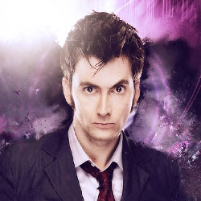

| Home | The Doctors | The Companions | The Villains |
|
|||
The Tenth DoctorThe Tenth Doctor is an incarnation of the Doctor, the protagonist of the BBC science fiction television programme Doctor Who. He is played by Scottish actor David Tennant in three series as well as nine specials. As with previous incarnations of the Doctor, the character has also appeared in other Doctor Who spin-offs. In the programme's narrative, the Doctor is a centuries-old Time Lord alien from the planet Gallifrey who travels in time in his TARDIS, frequently with companions. When the Doctor is critically injured beyond medical repair, he can regenerate his body; in doing so, his physical appearance and personality change, and a new actor assumes the role. Tennant's portrayal of the Doctor is of an outwardly charismatic and charming adventurer whose likeable and easygoing attitude can quickly turn to righteous, even arrogant fury. This incarnation's companions include working class shop assistant Rose Tyler (Billie Piper), medical student Martha Jones (Freema Agyeman), and fiery temp worker Donna Noble (Catherine Tate). He eventually parts ways with them all by the end of the 2008 series finale, "Journey's End", after which he attempts to travel alone for the duration of the 2008–10 specials before being accompanied by Donna Noble's Grandfather, Wilfred Mott on his final adventure in The End of Time. In November 2013, and 2015 as part of Doctor Who 's 50th Anniversary celebrations and 10th since the show was revived in 2005, Tennant's Doctor was voted "The UK's favourite Doctor" in a survey held by the Radio Times magazine. |